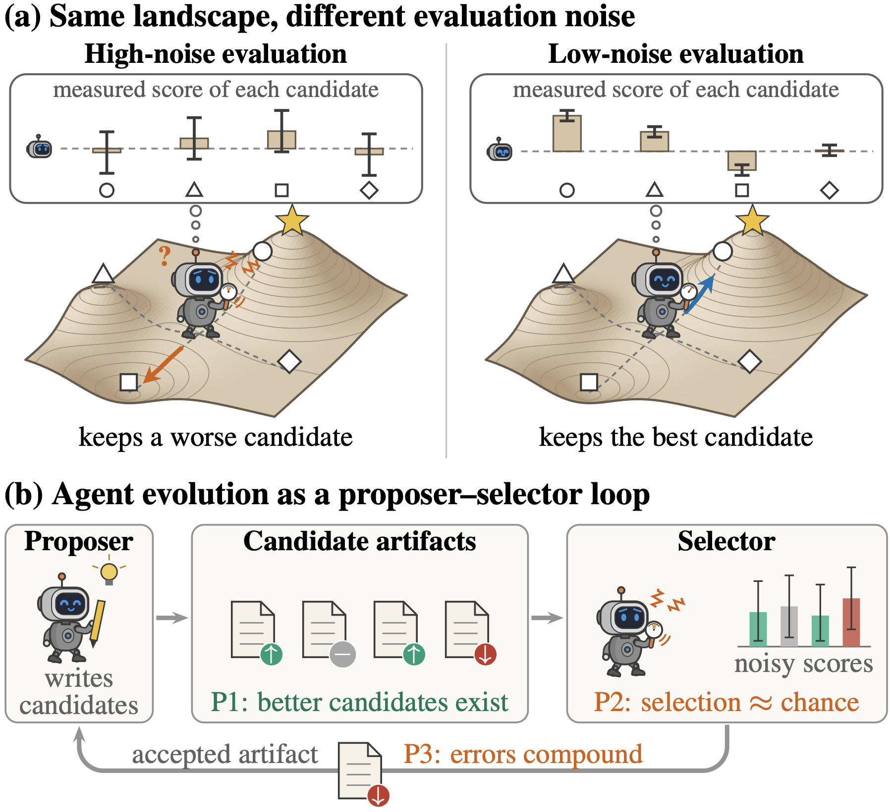

01Proposal works
Good skills already exist.
Sample 100 candidate skills once and genuine cross-task winners are already in the pool: Quality@100 = 61.8%, +3.4 pp above the null pool.
Agent evolution’s key is identifying improvements
Agents already propose real improvements. Evolution stalls because the evaluators that choose between them are, in effect, flipping coins.
Sample 100 candidate skills once and genuine cross-task winners are already in the pool: Quality@100 = 61.8%, +3.4 pp above the null pool.
Execution gates (49.7%) and LLM judges (45.4–49.0%) choose the better candidate no more often than a coin, so training gains turn into test drops.
Next: a 90-second game. You pick upgrades the way an evolving agent does — and see whether you beat the coin. ↓
Every pitch was a real SKILL.md from our Terminal-Bench runs. Self-improving (RSI) agents pick upgrades exactly the way you just did.
We audit the measurement instrument, not the ambition of self-improving agents. Method rankings flip across studies, so we ask a foundational question: when an agent edits its prompts, skills, or harness, can standard evaluation reliably tell a true improvement from a lucky run?
The bottleneck is identifying true improvements under noise—not proposing them.
Frozen-weight edits act through noisy multi-turn rollouts. Rollout noise (σ²) and run-to-run drift (τ²) set an evaluation resolution floor; when gains sit below it, greedy acceptance harvests luck instead of better skills.
We are not rejecting agent evolution or questioning prior researchers' good faith. Proposers work, and even shortcuts confirm that evolution optimizes whatever signal clears the noise floor. Progress calls for four shifts:
Why does evolution stall on some benchmarks while claiming +10–40 pp elsewhere? Methods trade wins across papers—stalling on Terminal-Bench while jumping elsewhere. The Resolution Hypothesis: evolution accumulates gains when they exceed evaluation resolution, and drifts on noise when they fall below it.

Candidate pools hold artifacts that improve held-out quality beyond luck.
Execution scores and trajectory LLM judges fail to rank candidates reliably.
Greedy acceptance inflates in-loop scores while runs diverge.
Across 171 results in 9 papers, the 3.4 pp median margin sits below single-run SD on >60% of pairs; best-of-4 accuracy on Terminal-Bench is 33% (random 25%).
Auditing 12 benchmarks × 3 models, a one-sentence rule recovers a median 90% of gains >3 pp; repairing the evaluation drops gains from 17.6 to 0.8 pp.
Quality@100 reaches 61.8% (+3.4 pp over null; shared skills span >15 pp), while 1-rollout (49.7%), 2-rollout (48.6%), and LLM judges (45.4%–49.0%) sit near 50%.
In-loop validation rises +6.9 to +9.0 pp while 8× validation re-evaluation shifts +0.35 to −3.21 pp, and τ2 grows to 4.2–24.5 pp².
Neither—proposers genuinely work, and prior results reflect an unmeasured noise floor rather than bad faith. Tested proposers produce real held-out improvements (Quality@100 reaches 61.8%), and single-run reporting became standard before rollout variance (Var(Ŷ) = σ² + τ²) was quantified.
In principle, yes—yet in practice the community has operated on the opposite premise, and the severity is surprising.
Finding a +20–40 pp lever is real optimization, but it reflects a benchmark-wide convention rather than fine-grained task skills. Under frozen weights, one global rule—like matching a strict parser or benchmark variant—lifts most tasks at once (one sentence recovers a median 90% of gains >3 pp). After evaluation repair, median gains drop from 17.6 to 0.8 pp.
The bottleneck is shared across both text-artifact and harness families whenever step gains fall below resolution. Across 4 text methods (GEPA, SkillOpt-Lite, Trace2Skill, ReasoningBank) and 3 harness methods (HarnessLens, Meta-Harness, AHE) on 6 models (150 configs), no single proposer is singled out—all hit sparse terminal feedback when ranking +1–3 pp refinements.
Standard loops use 1–2 rollouts to stay tractable; scaling to 16× validation helps, at 16× inner-loop cost. Under standard budgets, execution (49.7% / 48.6%) and LLM judges (45.4%–49.0%) sit near a coin flip. Raising validation to 16× lifts mean test score 61.4% → 64.4% and best run 64.8% → 72.7%, motivating cheaper low-variance diagnostics.
It supports the Resolution Hypothesis by structurally reducing evaluation noise. Evolving task-specific code enables cheap parallel re-evaluation of deterministic programs and richer runtime diagnostics, allowing incremental gains to clear resolution—unlike frozen-weight text/harness edits scored by stochastic multi-turn rollouts.
Across 6 models up to Kimi-K3, GLM-5.2, GPT-5.6, and DeepSeek-V4-Flash, noise shrinks mainly where benchmarks saturate. On ALFWorld, stronger models show lower noise only near the ceiling where little headroom remains. On unsaturated Terminal-Bench, median evaluation noise stays around 3.5–4.0 pp across model tiers.
Follow the argument step by step—from method-ranking instability to why evolution loops stall—and expand any explorer to test our empirical numbers yourself.
Across four audited benchmarks, >60% of same-benchmark method pairs differ by less than one single-run SD—picking the best of four methods on Terminal-Bench is right only 33% of the time (random: 25%).
Across 12 benchmarks × 3 models, a one-sentence rule reproduces a median 90% of gains >3 pp; repairing the evaluation drops median gains from 17.6 to 0.8 pp.

Which loophole, on which benchmark, how it was found and how released artifacts use it: see the shortcut atlas below.
Quality@100 climbs to 61.8% (+3.4 pp above the equal-quality null; shared skills span >15 pp), yet execution selectors (49.7% / 48.6%) and LLM judges (45.4%–49.0%) stay flat near 50%.
Greedy acceptance harvests upward noise: in-loop scores rise +6.9 to +9.0 pp while 8× re-evaluation shifts +0.35 to −3.21 pp, and τ2 grows to 4.2–24.5 pp².

We audited the largest reported gains on twelve benchmarks with three models. On eight of them, the evaluation released with the method admits a shortcut: one behavior that the grader rewards on most tasks at once, large enough for even a noisy evaluation to pick up. Choose a benchmark to see the loophole, what the grader actually sees, how released artifacts earn their gain, and what is left once the evaluation is repaired.
An LLM agent goes through the artifacts released with GEPA and SkillOpt-Lite and those evolved in our grid, instruction by instruction, and flags what could explain the gain. We check each flag by hand against the grader and append the most responsible instruction, as a single rule, to the unevolved baseline. The rule is frozen before the run.
If one sentence recovers the gain, the gain is a single behavior, not an accumulation of skills.
Restore the benchmark’s official evaluation where the method’s port departs from it, or grade answers by meaning instead of surface form (exact match, or two LLM judges that see only the question, the reference and the extracted answer both accept). Then re-score the same artifacts.
If the gain disappears, it came from the evaluation, not from the capability the benchmark intends to measure.
Sources: Appendix “Gain Audit” of the paper (shortcut, repair and rule tables; per-benchmark results; headroom after repair) and our audit logs. Rules are quoted as run; the full text is released with our code. Reported gains on GEPA and SkillOpt-Lite benchmarks are those of the released artifacts transferred to our models, typically smaller than on the model they were optimized for.
Main results of nine agent-evolution papers: 178 benchmark–model results, 171 with an optimization competitor.
| Paper | Median lead | Runs |
|---|---|---|
| GEPA | 2.5 | n/s |
| ACE | 10.4 | n/s |
| ReasoningBank | 3.6 | n/s |
| Trace2Skill | 7.6 | 3 |
| SkillOpt | 3.0 | n/s |
| SkillOpt-Lite | 2.0 | n/s |
| Meta-Harness | 3.8 | n/s |
| HarnessLens | 0.8 | 1 |
| AHE | 0.0 | 1 |
| Lead in pp. n/s: a single score, number of runs not stated. | ||
Good evolved skills exist—exact-identifier and tokenizer-fidelity rules that transfer across tasks.
@article{zeng2026resolution,
title={The Resolution Hypothesis: Agent Evolution's Key Is Identifying Improvements},
author={Zeng, Yuanhao and Lan, Shaocheng and Lu, Ao and Yan, Kuang and Lin, Heng and Xu, Xinang and Li, Yexin and Shan, Ruo and Ren, Kan},
journal={arXiv preprint arXiv:2611.23068},
url={https://arxiv.org/abs/2611.23068},
year={2026}
}